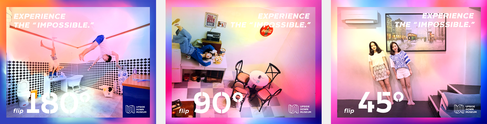

Upside Down Museum
Overview
Summer 2020 | 3 Months | Museum Branding
As the pressure builds up in our lives, people are always seeking a place that can let them take a breath and forget about reality. Upside Down Museum is the fastest-growing entertainment place since it can transport guests into an alternative world where everything is upside down, People can experience impossible things here like walking on walls. The museum uses these illusions that play tricks on people’s mind and senses to explain why our eyes see things which our brain cannot understand.
Generally, it’s an immersive and interactive place where our imagination is set free. The whole project is based on the concept of dynamism, uniqueness and modernness that define the identity of the Upside Down Museum.
Role
Brand Design
Visual Identities
01. Visual Identities
Colors
The color palette is a free adaptation based on museum galleries, resulting in a very dynamic and cheerful feeling.
Logo

Fifth Element
Being consistent with logotype,
the graphic element is created with the simple cuts from the logo,
then generated to new shapes.
(see one example below)


Icons

02. Museum Deliverables
Tickets

Stationery


03. Products


04. Posters
